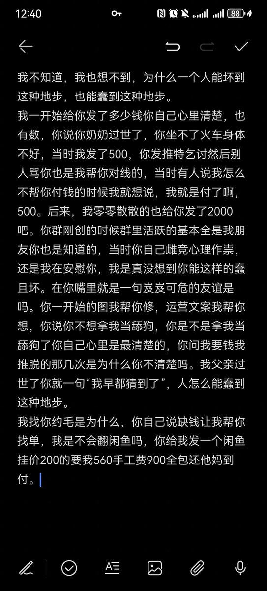

Winit420 #天苑四
@winterfruit_1
@Mortis0721 抱抱

Mortis様の颜
@Mortis0721
这是一个挂人贴，挂一位前些日子因为卖图包赚不到钱退推的前“亲友”。
我父亲过世了你就一句“我早都猜到了”，人怎么能蠢到这地步，我真的难以置信。
我当时找了很多朋友，她们大多数对我就一句话。你人品不行，很早之前就没联系过了^^
那些钱我也不想要了，2000。因为我还知道别人给你发了6000^^你真行h https://t.co/sOK9FdvE4Z